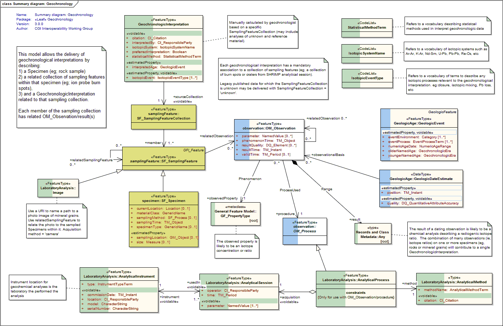

Package GeoSciML/LaboratoryAnalysis-Specimen/Geochronology
The Dating package allows the delivery of interpretation of geochronological anaylytical data
Class Summary |
|
| <<FeatureType>> Classes | |
GeochronologicInterpretation
<<FeatureType>>
|
An interpretation made by a geologist of the age of a specimen made by statistical analysis of a single collection of observations. A specimen may have multiple geochronological interpretations made on it, each related to a different observation collection. |
| <<CodeList>> Classes | |
IsotopicEventType
<<CodeList>>
|
Refers to a vocabulary of terms to describe any isotopic processes relevant to the geochronologic interpretation. eg:closure, isotopic mixing, Pb loss, etc |
IsotopicSystemName
<<CodeList>>
|
Refers to a vocabulary of isotopic systems such as Ar-Ar, K-Ar, Nd-Sm, U-Pb, Pb-Pb, Re-Os, etc |
StatisticalMethodTerm
<<CodeList>>
|
Refers to a vocabulary describing statistical methods used in interpret geochronologic data |
Tagged Values |
||
| Tag | Value | Notes |
| xsdDocument | dating.xsd | Description: Name of an XML Schema document to create representing the content of this package |
| xsdEncodingRule | iso19136_2007 | Values: iso19136_2007 | iso19139_2007 | iso19136_2007_INSPIRE_Extensions Default: iso19136_2007 Description: XML Schema encoding rule to apply |
UML Diagram: Summary diagram: Geochronology
